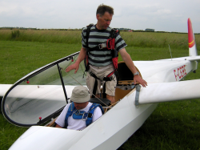
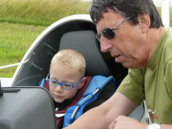

L'Association Sportive Vélivole Raymond Delmotte vous offre :
|  Une école de pilotage : un instructeur avec son élève. |
|  Vol d'initiation à presque tous ages... |
L'A.S.V.R.D. fonctionne entièrement grace au bénévolat (instruction,entretien et gestion) tous les week-ends et jours fériés.
Enfin, le vol à voile est une formation de base idéale pour aborder les autres activités aéronautiques.